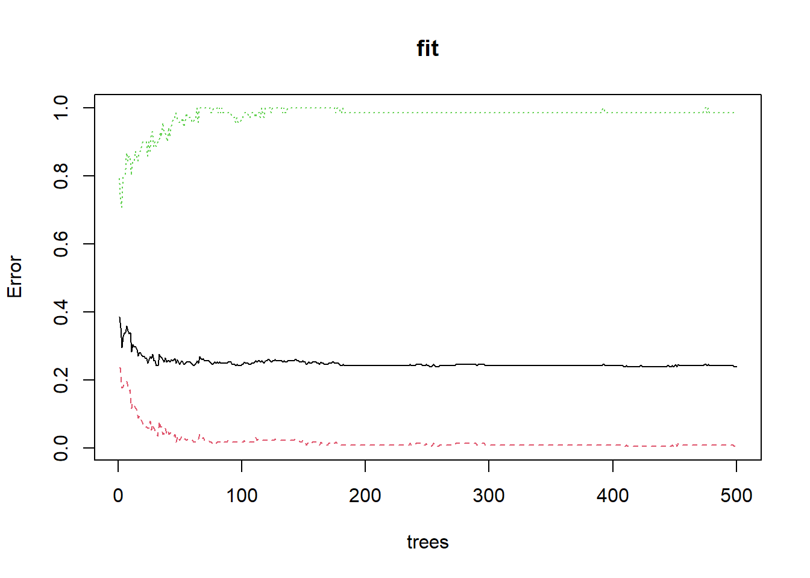
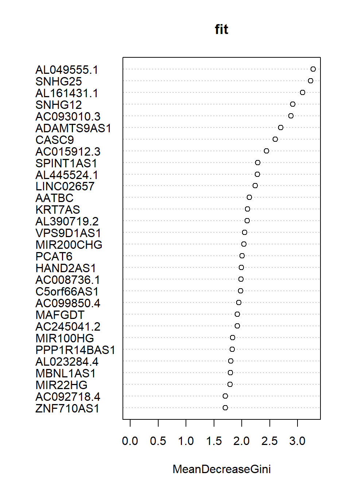
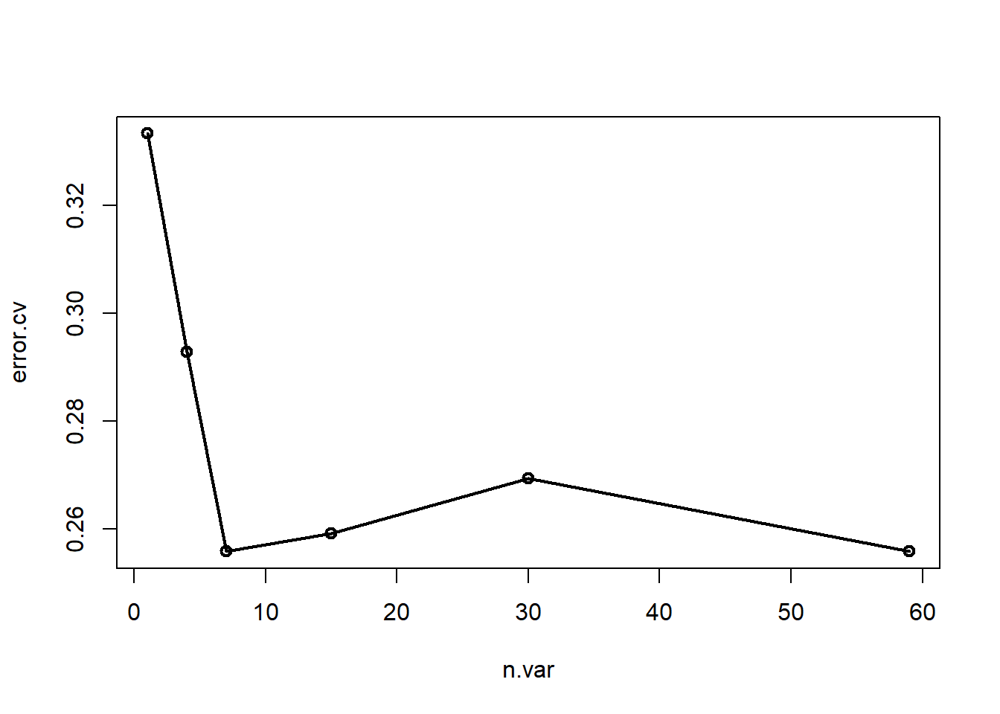

rm(list = ls())
load(file = "datasets/lnc_expr_clin.RData")
#去掉没有生存信息的样本
lnc_expr_clin <- lnc_expr_clin[!is.na(lnc_expr_clin$time_months),]
lnc_expr_clin <- lnc_expr_clin[lnc_expr_clin$time_months>0,]
#选择其中一部分数据
dat.cox <- lnc_expr_clin[,c(72,1:59)]
#把变量命中的“-”去掉
colnames(dat.cox)<- gsub("-","",colnames(dat.cox))
#结果变量变为因子型
dat.cox$event <- factor(dat.cox$event)
dim(dat.cox)
## [1] 297 60
dat.cox[1:4,1:6]
## event PGM5AS1 LINC01082 AC005180.2 AC005180.1 FENDRR
## 1 0 0.15064007 0.2642238 0.0000000 0.1547768 0.7802599
## 2 0 0.06309362 0.1666554 0.3105983 0.2436603 0.7239329
## 3 1 2.16399508 3.5662920 2.2454129 2.0073496 2.8409939
## 4 0 2.73075081 1.7314314 0.8609916 0.7323014 1.053124919 随机森林筛选变量
之前已经给大家介绍了4种可用于筛选变量的方法，分别是：
除此之外，还介绍过递归特征消除这种方法：递归特征消除
这里再介绍一下如何根据随机森林得出的变量重要性筛选变量。
随机森林筛选变量和递归特征消除其实更偏向于机器学习方面，和先单后多这种筛选变量的方法并不一样。随机森林作为一种非常常见的机器学习方法，它是可以调参的，我们这里就不演示调参的过程了，大家可以参考机器学习系列合集。
这里展示的是随机森林在分类问题中的使用，对于回归问题也是完全一致的使用方法。对于随机生存森林，请参考随机生存森林合集
19.1 准备数据
我们使用TCGA-BLCA的lncRNA数据(数据在粉丝QQ群文件，需要的加群下载即可)，其中包括408个样本，time_months是生存时间，event是生存状态，1代表死亡，0代表生存，其余变量都是自变量。
先简单处理一下数据：
19.2 建立模型
使用经典的randomForest建立随机森林模型：
library(randomForest)
set.seed(124)
fit <- randomForest(event~., data = dat.cox)
fit
##
## Call:
## randomForest(formula = event ~ ., data = dat.cox)
## Type of random forest: classification
## Number of trees: 500
## No. of variables tried at each split: 7
##
## OOB estimate of error rate: 23.91%
## Confusion matrix:
## 0 1 class.error
## 0 225 1 0.004424779
## 1 70 1 0.985915493结果给出了树的数量：500颗；OOB错误率：23.91%；还给出了混淆矩阵。
19.3 结果探索
下面是可视化整体错误率和树的数量的关系，可以看到随着树的数量增加，错误率逐渐降低并渐趋平稳，中间的黑色线条是整体的错误率，上下两条是结果变量中两个类别的错误率。
plot(fit)
可以看到结果有一个类别的错误率竟然是逐渐增加的，因为我们这个数据的存在严重的类不平衡问题，也就是结果变量中的两种类别差异很大：
table(dat.cox$event)
##
## 0 1
## 226 71类别0有226个，类别1只有71个，模型为了提高整体准确率，就会牺牲掉类别为1的准确性。
查看整体错误率最小时有几棵树：
which.min(fit$err.rate[,1])
## [1] 252查看各个变量的重要性，这里给出了mean decrease gini，数值越大说明变量越重要：
importance(fit)
## MeanDecreaseGini
## PGM5AS1 0.9352510
## LINC01082 1.3866068
## AC005180.2 1.6168145
## AC005180.1 1.3488141
## FENDRR 1.3961145
## AC053503.3 1.1375051
## MIR100HG 1.8389235
## AP001107.5 1.4790429
## C5orf66AS1 1.9776753
## NR4A1AS 1.5676917
## AL162424.1 1.4297710
## AF001548.1 1.4044652
## AC099850.4 1.9485050
## MBNL1AS1 1.7969564
## ADAMTS9AS1 2.6993467
## MIR22HG 1.7904790
## MIR200CHG 2.0379430
## AC093010.3 2.8789159
## LINC00865 1.4885762
## AP003071.4 1.6418555
## PCAT6 2.0033471
## LINC02657 2.2435347
## PPP1R14BAS1 1.8262720
## AC012085.2 1.3986750
## ACTA2AS1 1.3608811
## AC036108.3 1.6392733
## AC079313.2 1.1854198
## AC020916.1 1.5358508
## SNHG25 3.2320090
## AL049555.1 3.2795519
## MIR11HGAS1 1.1433175
## AC018904.1 1.5742751
## SNHG12 2.9166977
## SPINT1AS1 2.2857854
## KRT7AS 2.1031232
## MIR205HG 1.5659665
## HAND2AS1 1.9955215
## AL445524.1 2.2827356
## LINC01980 1.4518537
## ZNF710AS1 1.7042160
## AC092718.4 1.7060641
## AC008735.2 1.5337512
## LINC01133 1.2802464
## AC025575.2 1.5706176
## MAFGDT 1.9238538
## CASC9 2.6039129
## AL390719.2 2.1003651
## AC002398.2 0.7629889
## AC008736.1 1.9839028
## AL161431.1 3.0891759
## PCCADT 1.5235273
## AC245041.2 1.9197363
## U62317.1 1.6662262
## U62317.2 1.4415305
## VPS9D1AS1 2.0524334
## AL023284.4 1.8027226
## AATBC 2.1357139
## LINC00641 1.6734872
## AC015912.3 2.4443188可视化变量重要性：
varImpPlot(fit)
通过变量重要性，大家就可以选择比较重要的变量了。你可以选择前5个，前10个，或者大于所有变量性平均值(中位数，百分位数等)的变量等等。
19.4 交叉验证变量筛选
randomForest还提供了使用交叉验证法进行递归特征消除，筛选变量的方法：rfcv，下面是使用5折交叉验证进行递归特征消除：
set.seed(647)
res <- rfcv(trainx = dat.cox[,-1],trainy = dat.cox[,1],
cv.fold = 5,
recursive = T
)
res$n.var #变量个数
## [1] 59 30 15 7 4 1
res$error.cv #错误率
## 59 30 15 7 4 1
## 0.2558923 0.2693603 0.2592593 0.2558923 0.2929293 0.3333333可以看到在变量个数为7的时候，错误率是最小的(和59一样，但是肯定选简单的)。
可视化这个结果，很明显变量个数为7(和59)的时候错误率最小：
with(res, plot(n.var, error.cv, type="o", lwd=2))
结合上面的变量重要性，你可以选择前7个最重要的变量。
注意
rfcv得出的变量重要性和randomForest得出的变量重要性并不一样，而且rfcv的结果也并没有明确给出到底哪几个变量才是被选中的。这个方法并不常用，也不推荐大家用~
19.5 Boruta筛选变量
Boruta是基于随机森林的一种变量筛选方法，它可以基于随机森林的变量重要性计算z-score，然后对每个变量标记确认 or 待定 or 拒绝，从而实现变量筛选。
这种方法倾向于找到所有与结果变量最相关的变量，所以结果有可能是冗余的(或者存在共线性、相关性)。
参考文献：Kursa M B, Rudnicki W R. Feature selection with the Boruta package[J]. Journal of statistical software, 2010, 36: 1-13.
我们还是以这个数据集为例进行演示。
library(Boruta)
set.seed(23)
fs <- Boruta(event ~ ., data = dat.cox, doTrace=1)查看筛选结果：变量确认，变量待定，变量拒绝：
table(fs$finalDecision)
##
## Tentative Confirmed Rejected
## 11 7 41获取确认变量的名字：
getSelectedAttributes(fs)
## [1] "MIR100HG" "ADAMTS9AS1" "AC093010.3" "SNHG25" "SPINT1AS1"
## [6] "HAND2AS1" "AL161431.1"这样就搞定了！用这几个变量重新建立模型即可，当然也可以用这几个变量建立其他你喜欢的模型，都是可以的。
公众号后台回复变量筛选即可获取相关推文合集，回复随机森林也可获取相关合集。